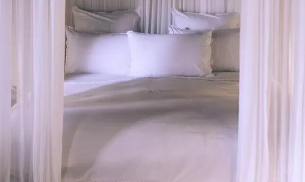

A la hora de dormir, muchas personas buscan los mejores materiales para colocar en sus camas y así conciliar el sueño y disfrutar de un plácido descanso. Por esto, es necesario contar con una buena funda de almohadas y que las sábanas sean de un material suave.
Las sábanas son muy necesarias a la hora de dormir para mantener la temperatura corporal en el cuerpo y tener un buen descanso que permita recuperar todas las energías. En la mayoría de los casos, la ropa de cama está hecha de algodón o poliéster, los cuales tienen funciones diferentes y varía la forma en la calidad y funcionamiento.
En cuanto al poliéster, es una fibra sintética que tiende a no arrugarse y su aspecto es bastante brillante. Respecto al algodón, es una fibra 100% natural, la cual es muy fresca y ayuda a absorber la humedad del cuerpo a la hora de dormir.
De igual forma, hay algunas sábanas que cuentan con características especiales que son exclusivas por la cantidad de hilos que cuentan.
Según la revista vanity fair, en el L'Hôtel Palermo de Buenos Aires (Argentina), “cada habitación está decorada con diseño especial y muebles restaurados, y cuentan con sábanas de suaves 400 hilos de algodón egipcio”.
El algodón cultivado en Egipto es uno de los más especiales, pues en esta región de África se lleva varios años cultivando esta materia prima, y dadas las condiciones del suelo y la humedad logran crecer fibras más largas de lo común, de cerca de 3,50 centímetros.
Para conocer la calidad de las sábanas, es necesario conocer cuántos hilos tiene, en la mayoría de hoteles exclusivos se observa dichas características para ofrecer mayor comodidad y lujo a la hora de dormir.
Algunas de las marcas proveedoras de lujo son la italiana Sferra, la francesa D. Porthault y Luxor Linens, las cuales llegan a ofrecer sábanas con hasta 1.200 hilos.
Según la empresa británica Beaumont & Brown, entre los 200 y 400 hilos se puede ofrecer un buen material, “dentro de ese rango, todos nuestros clientes deben ser capaces de encontrar un equilibrio adecuado entre comodidad, lujo y precio. Además, las prendas que superan los 400 hilos no se admiten en las tintorerías habituales, debido a que el agua no puede traspasar la tela”, expresaron.
Los precios para comprar sábanas con estos hilos puede ir desde $60.000 hasta $400.000, todo depende de la calidad del producto, marca y de qué lugar proviene el algodón del que esté hecha la ropa de cama.